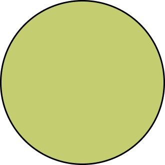

9:41



김선우 • 새싹 탐험가
PICO와 연속 54일째
나의 탐험
10월 셋째 주
10월 8일 탐험
친구와 곤충 3종을 발견해 함께 탐험을 완료했어요
PICO TIP
잎 뒷면도 살펴보세요!
작은 알이 숨어 있을지도 몰라요.
앱 설정


김선우 • 새싹 탐험가
PICO와 연속 54일째
나의 탐험
10월 8일 탐험
친구와 곤충 3종을 발견해 함께 탐험을 완료했어요
잎 뒷면도 살펴보세요!
작은 알이 숨어 있을지도 몰라요.
앱 설정